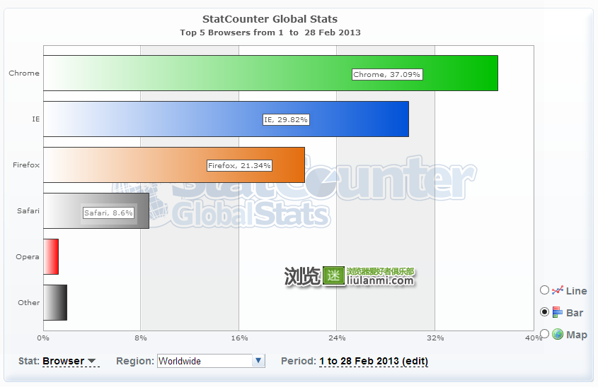
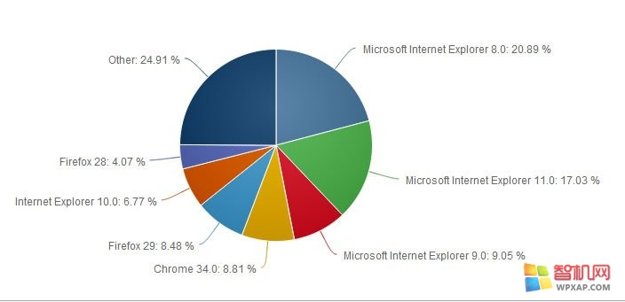
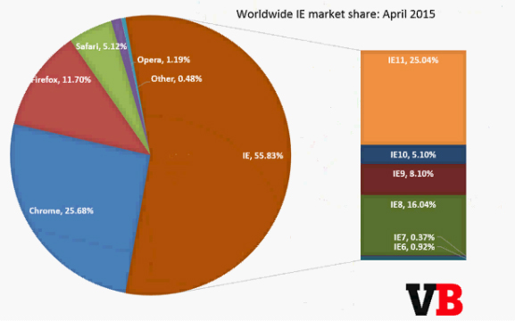
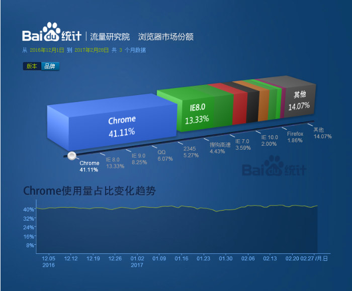

浏览器兼容
1.为什么会出现浏览器兼容问题？
由于各大主流浏览器由不同的厂家开发，所用的核心架构和代码也很难重和，这就为各种莫名其妙的Bug(代码错误）提供了温床。再加上各大厂商出于自身利益考虑而设置的种种技术壁垒，让CSS应用起来比想象得要麻烦。浏览器的兼容问题是我们必须去克服的。
2.关于浏览器
1）主流浏览器
Internet Explorer、 Safari、Mozilla Firefox、 Google Chrome、Opera、百度、360、搜狗、傲游
2）最早的浏览器 : Mosaic / Netscape Navigator(网景领航者)（1994-2008）简称NN
3)浏览器大战
第一次浏览器大战发生在上个世纪90年代，微软发布了它的IE浏览器，和网景公司的Netscape Navigator大打出手。
第二次浏览器大战发生在20世纪。
4）浏览器内核及代表作品
浏览器最关键的部分就是它的渲染引擎（Rendering Engine），也就是大家平常所说的的“内核”。
3、主流浏览器市场份额
2013年2月份全球主流浏览器市场份额排行榜

2014年11月份全球主流浏览器市场份额排行榜

2015年5月份全球主流浏览器市场份额排行榜

2016年12----2017年2月

（1）五大浏览器内核
•Trident （MSHTML） （三叉戟；三叉线；三齿鱼叉）
•Gecko （壁虎）
•Presto （ 迅速的）
•Webkit （Safari内核,Chrome内核原型,它是苹果公司自己的内核，也是苹果的Safari浏览器使用的内核）
•Blink (由Google和Opera Software开发的浏览器排版引擎)
（2）五大浏览器内核代表作品
*Trident:IE、Maxthon(遨游)、腾讯 、Theworld世界之窗、360浏览器
代表作品IE,因为IE捆绑在Windows中，所以占有极高的市场份额，又称IE内核或是MSHTML，此内核只能应用于windows平台，且是不开源的。
*Gecko：代表作品Mozilla Firefox 是开源的,它的最大优势是跨平台，能在Microsoft Windows、Linux和MacOS X等主要操作系统上运行。
*Webkit :代表作品Safari、Chrome ， 是一个开源项目。
*Presto :代表作品Opera ，Presto是由Opera Software开发的浏览器排版引擎。它也是世界上公认的渲染速度最快的引擎。
*Blink ：由Google和Opera Software开发的浏览器排版引擎，2013年4月发布。
4、CSS Bug、CSS Hack和Filter
1)CSS Bug:CSS样式在各浏览器中解析不一致的情况，或者说CSS样式在浏览器中不能正确显示的问题称为CSS bug.
2)CSS Hack: CSS中，Hack是指一种兼容CSS在不同浏览器中正确显示的技巧方法，因为它们都属于个人对CSS代码的非官方的修改，或非官方的补丁。有些人更喜欢使用patch(补丁)来描述这种行为。
3)Filter:表示过滤器的意思，它是一种对特定的浏览器或浏览器组显示或隐藏规则或声明的方法。本质上讲，Filter是一种用来过滤不同浏览器的Hack类型。
*使用Hack带来的一些副作用
降低了CSS代码的可读性，增加了代码的负担。
*设计CSS Hack和 Filter通常有两种方法
1)一种是利用浏览器自身的Bug，来隐藏或显示样式或声明；
2)另一种是利用浏览器对CSS支持的不完善，如对某些规则或语法还没有形成支持，来隐藏或显示样式。
5、IE6常见CSS解析Bug及hack
1)图片间隙
A)在元素中直接插入图片时，图片下方会产生约3像素的间隙(该bug出现在IE6及更低版本中)
hack1:将<img>转为块状元素，给<img>添加声明：display:block;
hack2:将img设置vertical-align:top/middle/bottom;只要不为baseline
2) 双倍浮向（双倍边距）
描述：当Ie6及更低版本浏览器在解析浮动元素时，会错误地把浮向边边界加倍显示。
hack:给浮动元素添加声明：display:inline;
3)默认高度（IE6）
描述：在IE6及以下版本中，部分块元素拥有默认高度（低于16px高度）
hack1:给元素添加声明：font-size:0;
hack2：给元素添加声明：overflow:hidden;
4)百分比bug
描述：在IE6及以下版本中在解析百分比时，会按四舍五入方式计算从而导致50%加50%大于100%的情况。
hack:给右面的浮动元素添加声明：clear:right; 意思：清除右浮动。
5)表单元素高度及对齐方式不一致(IE,MOZ,C,O,S)
描述：表单元素行高对齐方式不一致
hack:给表单元素添加声明：float:left;或vertical-align:top;
2)表单元素中按钮的解析是按怪异盒模型解析的。
3）直接去掉表单控件的边框时用border:0;border:none;不能兼容ie7以下浏览器。
*透明写法
1.opacity:0~1;IE8以上的浏览器
2.filter:alpha(opacity=1~100); IE9及IE9以下的浏览器
6)列表阶梯BUG（IE6及更低版本的浏览器中）
bug1:在给的子元素中使用了Float:left;父元素中没有设置浮动属性，li阶梯状效果。
hack:给父元素设置浮动便能解决此问题
bug2:当给LI里的A转成块元素，并设置了固定高度时，且给父元素写了浮动后在IE6及更低的版本浏览器里会出现垂直显示。
hack:给a也设置左浮动便可解决。
8)鼠标指针bug
描述：cursor属性的hand属性值只有IE浏览器识别，其它浏览器不识别该声明，cursor属性的pointer属性值IE6.0以上版本及其它内核浏览器都识别该声明。
hack:如统一某元素鼠标指针形状为手型，应添加声明：cursor:pointer;
扩展内容：
鼠标指针
cursor:crosshair(十字架)pointer(手形)move(移动)e-resize(左右方向)ne-resize（向右及向上移动）nw-resize(向上及向左移动)n-resize(向上移动)se-resize(向下及向右)sw-resize(向下及向左)s-resize（向下移动）w-resize（向左移动）text(文本)wait(等待状态)help(帮助)